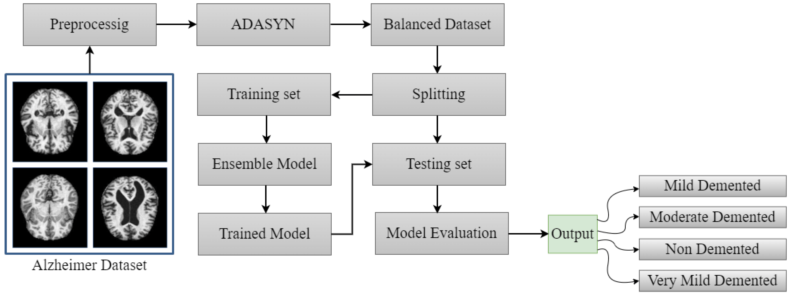

Welcome to Early Alzheimer Detection, where we are dedicated to providing innovative solutions for the early detection of Alzheimer's disease. Our mission is to make a positive impact on the lives of individuals and their families by leveraging technology for early diagnosis and intervention.
Alzheimer disease (AD) is a neurological disorder. For the AD, there is no specific treatment. Early detection of Alzheimer's disease can help patients receive the correct care. Many studies employ statistical and machine learning techniques to diagnose AD. The human-level performance of Deep Learning algorithms has been effectively shown in different disciplines. In the proposed methodology, the MRI data is used to identify the AD and Deep Learning technique is used to classify the present disease. The classification of Alzheimer's disease using deeplearning methods has shown promising results, and successful application in clinical settings requires a combination of high accuracy, short processing time, and generalizability to various populations. In this study, we developed a system of Alzheimer's disease detection using Convolutional Neural Network (CNN) architecture using magnetic resonance imaging (MRI) scans images. Which are trained using Kaggle dataset. The models in this study are trained on the same dataset in order to analyse their performances. The Convolutional Neural Network (CNN) architecture gives the highest accuracy where training accuracy is 86.34% and validation accuracy is 86.45% on the test data that detects AD accurately.
The primary objective of the Alzheimer's prevention project is to identify and implement effective strategies for reducing the risk of Alzheimer's disease. By addressing these objectives, the project aims to contribute valuable insights and practical solutions to the ongoing efforts in the field of Alzheimer's prevention.
Founders - Harshwardhan Taur & Sayyam Patodi
If you have any questions or inquiries, feel free to reach out to us:
Email: alzheimerdetection@gmail.com